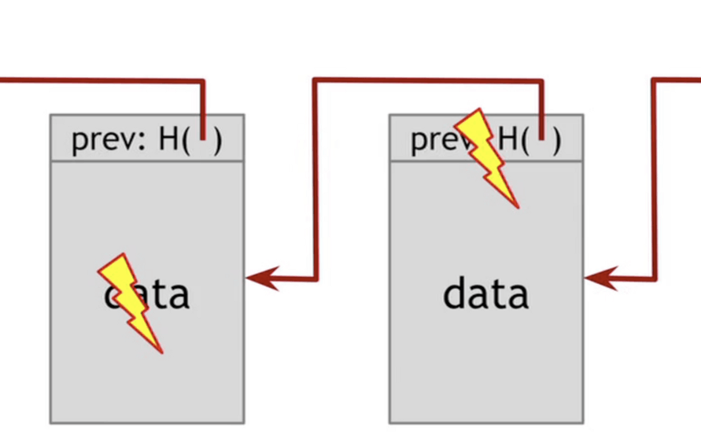
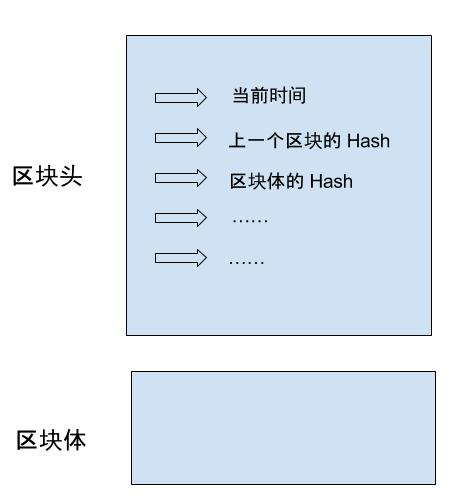
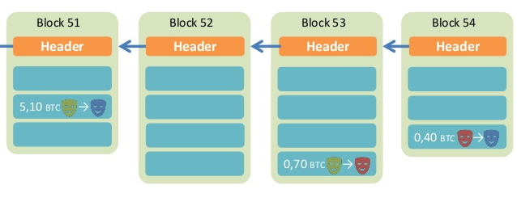
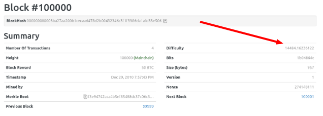
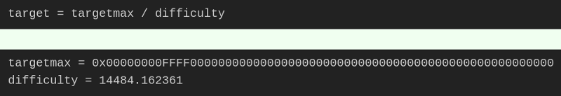
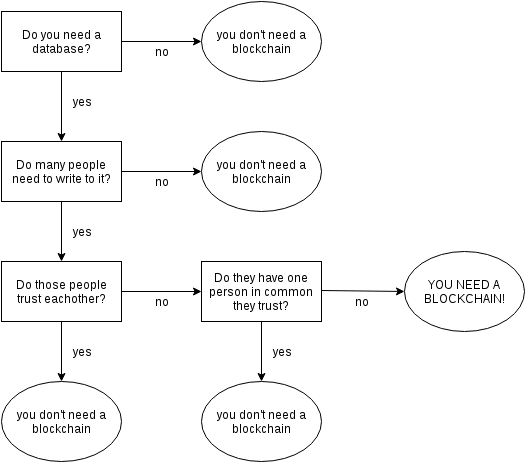

作者： 阮一峰
日期： 2017年12月26日
转自：区块链入门教程
区块链（blockchain）是眼下的大热门，新闻媒体大量报道，宣称它将创造未来。
可是，简单易懂的入门文章却很少。区块链到底是什么，有何特别之处，很少有解释。
下面，我就来尝试，写一篇最好懂的区块链教程。毕竟它也不是很难的东西，核心概念非常简单，几句话就能说清楚。我希望读完本文，你不仅可以理解区块链，还会明白什么是挖矿、为什么挖矿越来越难等问题。
需要说明的是，我并非这方面的专家。虽然很早就关注，但是仔细地了解区块链，还是从今年初开始。文中的错误和不准确的地方，欢迎大家指正。
区块链是什么？一句话，它是一种特殊的分布式数据库。
首先，区块链的主要作用是储存信息。任何需要保存的信息，都可以写入区块链，也可以从里面读取，所以它是数据库。
其次，任何人都可以架设服务器，加入区块链网络，成为一个节点。区块链的世界里面，没有中心节点，每个节点都是平等的，都保存着整个数据库。你可以向任何一个节点，写入/读取数据，因为所有节点最后都会同步，保证区块链一致。
分布式数据库并非新发明，市场上早有此类产品。但是，区块链有一个革命性特点。
区块链没有管理员，它是彻底无中心的。其他的数据库都有管理员，但是区块链没有。如果有人想对区块链添加审核，也实现不了，因为它的设计目标就是防止出现居于中心地位的管理当局。
正是因为无法管理，区块链才能做到无法被控制。否则一旦大公司大集团控制了管理权，他们就会控制整个平台，其他使用者就都必须听命于他们了。
但是，没有了管理员，人人都可以往里面写入数据，怎么才能保证数据是可信的呢？被坏人改了怎么办？请接着往下读，这就是区块链奇妙的地方。
区块链由一个个区块（block）组成。区块很像数据库的记录，每次写入数据，就是创建一个区块。

每个区块包含两个部分。
区块头（Head）：记录当前区块的特征值
区块体（Body）：实际数据区块头包含了当前区块的多项特征值。
生成时间
实际数据（即区块体）的哈希
上一个区块的哈希
...这里，你需要理解什么叫哈希（hash），这是理解区块链必需的。

所谓"哈希"就是计算机可以对任意内容，计算出一个长度相同的特征值。区块链的 哈希长度是256位，这就是说，不管原始内容是什么，最后都会计算出一个256位的二进制数字。而且可以保证，只要原始内容不同，对应的哈希一定是不同的。
举例来说，字符串123的哈希是a8fdc205a9f19cc1c7507a60c4f01b13d11d7fd0（十六进制），转成二进制就是256位，而且只有123能得到这个哈希。（理论上，其他字符串也有可能得到这个哈希，但是概率极低，可以近似认为不可能发生。）
因此，就有两个重要的推论。
推论1：每个区块的哈希都是不一样的，可以通过哈希标识区块。
推论2：如果区块的内容变了，它的哈希一定会改变。区块与哈希是一一对应的，每个区块的哈希都是针对"区块头"（Head）计算的。也就是说，把区块头的各项特征值，按照顺序连接在一起，组成一个很长的字符串，再对这个字符串计算哈希。
Hash = SHA256( 区块头 )上面就是区块哈希的计算公式，SHA256是区块链的哈希算法。注意，这个公式里面只包含区块头，不包含区块体，也就是说，哈希由区块头唯一决定，
前面说过，区块头包含很多内容，其中有当前区块体的哈希，还有上一个区块的哈希。这意味着，如果当前区块体的内容变了，或者上一个区块的哈希变了，一定会引起当前区块的哈希改变。
这一点对区块链有重大意义。如果有人修改了一个区块，该区块的哈希就变了。为了让后面的区块还能连到它（因为下一个区块包含上一个区块的哈希），该人必须依次修改后面所有的区块，否则被改掉的区块就脱离区块链了。由于后面要提到的原因，哈希的计算很耗时，短时间内修改多个区块几乎不可能发生，除非有人掌握了全网51%以上的计算能力。
正是通过这种联动机制，区块链保证了自身的可靠性，数据一旦写入，就无法被篡改。这就像历史一样，发生了就是发生了，从此再无法改变。

每个区块都连着上一个区块，这也是"区块链"这个名字的由来。
由于必须保证节点之间的同步，所以新区块的添加速度不能太快。试想一下，你刚刚同步了一个区块，准备基于它生成下一个区块，但这时别的节点又有新区块生成，你不得不放弃做了一半的计算，再次去同步。因为每个区块的后面，只能跟着一个区块，你永远只能在最新区块的后面，生成下一个区块。所以，你别无选择，一听到信号，就必须立刻同步。
所以，区块链的发明者中本聪（这是假名，真实身份至今未知）故意让添加新区块，变得很困难。他的设计是，平均每10分钟，全网才能生成一个新区块，一小时也就六个。
这种产出速度不是通过命令达成的，而是故意设置了海量的计算。也就是说，只有通过极其大量的计算，才能得到当前区块的有效哈希，从而把新区块添加到区块链。由于计算量太大，所以快不起来。
这个过程就叫做采矿（mining），因为计算有效哈希的难度，好比在全世界的沙子里面，找到一粒符合条件的沙子。计算哈希的机器就叫做矿机，操作矿机的人就叫做矿工。
读到这里，你可能会有一个疑问，人们都说采矿很难，可是采矿不就是用计算机算出一个哈希吗，这正是计算机的强项啊，怎么会变得很难，迟迟算不出来呢？
原来不是任意一个哈希都可以，只有满足条件的哈希才会被区块链接受。这个条件特别苛刻，使得绝大部分哈希都不满足要求，必须重算。
原来，区块头包含一个难度系数（difficulty），这个值决定了计算哈希的难度。举例来说，第100000个区块的难度系数是 14484.16236122。

区块链协议规定，使用一个常量除以难度系数，可以得到目标值（target）。显然，难度系数越大，目标值就越小。

哈希的有效性跟目标值密切相关，只有小于目标值的哈希才是有效的，否则哈希无效，必须重算。由于目标值非常小，哈希小于该值的机会极其渺茫，可能计算10亿次，才算中一次。这就是采矿如此之慢的根本原因。
前面说过，当前区块的哈希由区块头唯一决定。如果要对同一个区块反复计算哈希，就意味着，区块头必须不停地变化，否则不可能算出不一样的哈希。区块头里面所有的特征值都是固定的，为了让区块头产生变化，中本聪故意增加了一个随机项，叫做 Nonce。
Nonce 是一个随机值，矿工的作用其实就是猜出 Nonce 的值，使得区块头的哈希可以小于目标值，从而能够写入区块链。Nonce 是非常难猜的，目前只能通过穷举法一个个试错。根据协议，Nonce 是一个32位的二进制值，即最大可以到21.47亿。第 100000 个区块的 Nonce 值是274148111，可以理解成，矿工从0开始，一直计算了 2.74 亿次，才得到了一个有效的 Nonce 值，使得算出的哈希能够满足条件。
运气好的话，也许一会就找到了 Nonce。运气不好的话，可能算完了21.47亿次，都没有发现 Nonce，即当前区块体不可能算出满足条件的哈希。这时，协议允许矿工改变区块体，开始新的计算。
正如上一节所说，采矿具有随机性，没法保证正好十分钟产出一个区块，有时一分钟就算出来了，有时几个小时可能也没结果。总体来看，随着硬件设备的提升，以及矿机的数量增长，计算速度一定会越来越快。
为了将产出速率恒定在十分钟，中本聪还设计了难度系数的动态调节机制。他规定，难度系数每两周（2016个区块）调整一次。如果这两周里面，区块的平均生成速度是9分钟，就意味着比法定速度快了10%，因此接下来的难度系数就要调高10%；如果平均生成速度是11分钟，就意味着比法定速度慢了10%，因此接下来的难度系数就要调低10%。
难度系数越调越高（目标值越来越小），导致了采矿越来越难。
即使区块链是可靠的，现在还有一个问题没有解决：如果两个人同时向区块链写入数据，也就是说，同时有两个区块加入，因为它们都连着前一个区块，就形成了分叉。这时应该采纳哪一个区块呢？
现在的规则是，新节点总是采用最长的那条区块链。如果区块链有分叉，将看哪个分支在分叉点后面，先达到6个新区块（称为"六次确认"）。按照10分钟一个区块计算，一小时就可以确认。
由于新区块的生成速度由计算能力决定，所以这条规则就是说，拥有大多数计算能力的那条分支，就是正宗的区块链。
区块链作为无人管理的分布式数据库，从2009年开始已经运行了8年，没有出现大的问题。这证明它是可行的。
但是，为了保证数据的可靠性，区块链也有自己的代价。一是效率，数据写入区块链，最少要等待十分钟，所有节点都同步数据，则需要更多的时间；二是能耗，区块的生成需要矿工进行无数无意义的计算，这是非常耗费能源的。
因此，区块链的适用场景，其实非常有限。
1、不存在所有成员都信任的管理当局
2、写入的数据不要求实时使用
3、挖矿的收益能够弥补本身的成本如果无法满足上述的条件，那么传统的数据库是更好的解决方案。

目前，区块链最大的应用场景（可能也是唯一的应用场景），就是以比特币为代表的加密货币。下一篇文章，我将会介绍比特币的入门知识。
How does blockchain really work? , by Sean Han
Bitcoin mining the hard way: the algorithms, protocols, and bytes, by Ken Shirriff
[1] 区块链入门教程: https://www.ruanyifeng.com/blog/2017/12/blockchain-tutorial.html[2] How does blockchain really work?: https://medium.freecodecamp.org/how-does-blockchain-really-work-i-built-an-app-to-show-you-6b70cd4caf7d[3] Bitcoin mining the hard way: the algorithms, protocols, and bytes: http://www.righto.com/2014/02/bitcoin-mining-hard-way-algorithms.html